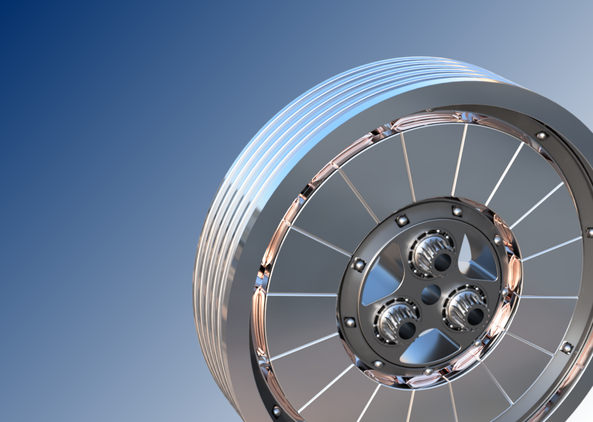

Master Thesis • Pforzheim University
2025
Axial Flux Machine — Surrogate-Based Topology Optimization
YASA axial-flux machines offer outstanding torque density, but their 3D flux paths demand expensive transient 3D-FEM simulations. An adaptive sampling strategy (AMOP) builds a surrogate model linking design parameters to performance, while a self-developed constraint cascade narrows the global design space to the technically relevant region — derived purely from data, no heuristics required.
